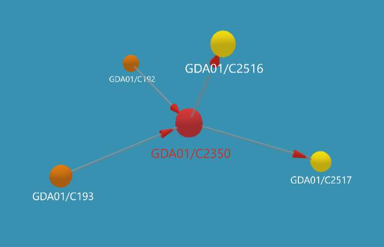

Filiatie is in het kadaster het proces waarbij de geschiedenis en onderlinge relatie van percelen wordt vastgelegd wanneer grond wordt gesplitst of juist samengevoegd. Deze viewer geeft inzicht in de kadastrale gemeente Gouda (GDA01).
Aan de getoonde informatie kunnen geen rechten worden ontleend.
Een kadastraal perceel heeft een unieke aanduiding (bijvoorbeeld GDA01-C2350). Maar percelen blijven niet altijd hetzelfde: ze kunnen worden opgesplitst, samengevoegd of opnieuw genummerd.
Filiatie is het systeem waarmee het kadaster bijhoudt:
Daardoor kun je altijd de geschiedenis van een perceel terugvinden. Je kunt het zien als een stamboom van percelen.
Er zijn twee richtingen waarin je filiatie kunt bekijken:
Dit maakt historisch onderzoek naar grond, eigendom of bouwontwikkeling mogelijk. Het invoeren van het oudst bekende perceelnummer of het meest recente perceelnummer geeft in de viewer dus verschillende resultaten.
Filiatie wordt vastgelegd zodra een perceel verandert. Bijvoorbeeld bij:
Het kadaster koppelt dan oude nummers aan nieuwe nummers, zodat de geschiedenis intact blijft.
Wil je weten hoe een perceel historisch is veranderd, dan kun je een filiatieonderzoek (laten) doen. Je krijgt dan een overzicht van:
De filiatie visualiseert de administratieve “geschiedenis” van een kadastraal perceel. Het laat zien hoe percelen door de tijd heen met elkaar verbonden zijn via splitsingen, samenvoegingen en vernummeringen.
De filiatieviewer geeft dit in de basis weer als een 3D model, neem bijvoorbeeld GDA01-C2350:

Dit model geeft dus weer dat GDA01-C2350 is voortgekomen uit (de samenvoeging van) de percelen GDA01-C192 en GDA01-C193. En GDA01-C2350 is daarna gesplitst in GDA01-C2516 en GDA01-C2517. In de viewer kun je op het oranje bolletjes klikken om het perceel op een historische kaart te bekijken, klikken op een gele bolletje toont het perceel op de hedendaagse kadastrale kaart. De grijze bolletjes zijn niet klikbaar, van deze percelen is geen extra informatie beschikbaar.
De filiatie van GDA01-C2350 is vrij overzichtelijk, voorbeelden als GDA01-D839, GDA01-D91 en GDA01-N1452 (met veel MDT02 "voorouders) tonen dat het snel complex kan worden!
Wanneer percelen zijn gesplitst en samengevoegd kan worden nagegaan via de Kadaster Archiefviewer die beschikbaar is bij Streekarchief Midden-Holland.